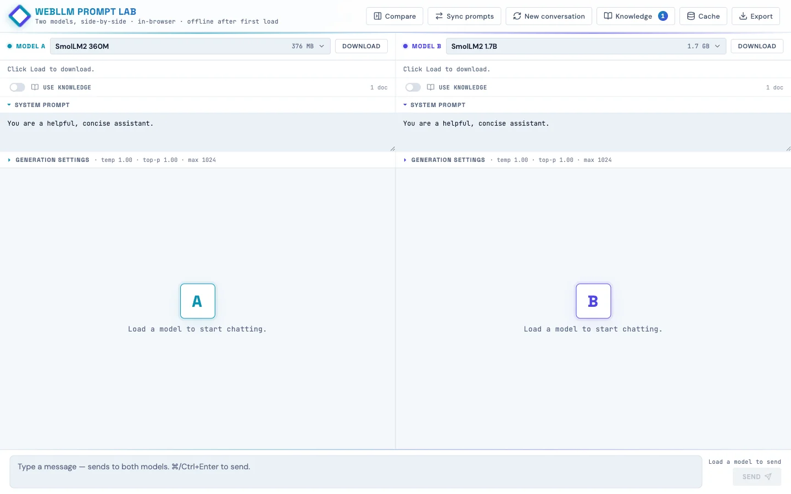
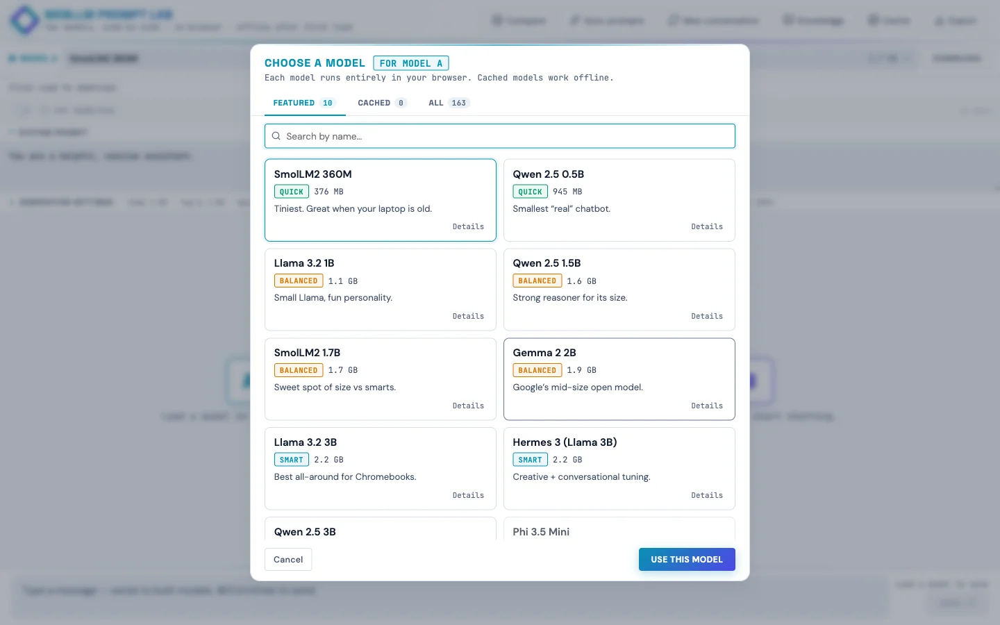
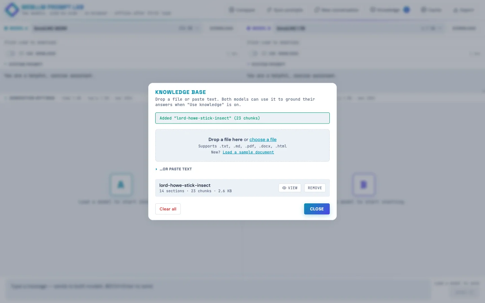
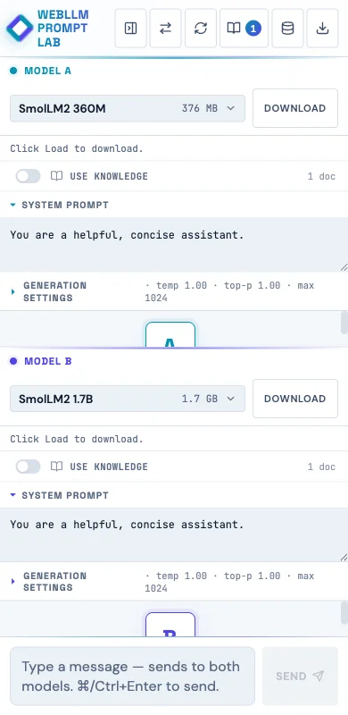

WebLLM Prompt Lab
Two language models side-by-side, running in the browser. Built so kids can poke at how AI works instead of just chatting with it.
Live at webllm-promptlab.web.app. Pick a model, watch it download once into IndexedDB, and from then on it runs offline on the student's own laptop. No API key, no data leaving the device. Two panes side-by-side so you can run the same prompt against two models and watch the streaming.

Why build this
Working on a project that wanted something students could experiment with privately in their after-school program. The hosted assistants (ChatGPT, Claude, Gemini) are slick, but they're also opaque (you don't see the model, you don't see the prompt template, you don't see what knowledge the model "has").
Running the model in the browser via WebGPU makes the pipeline visible and keeps every prompt on the student's device. The student loads weights they can see in their browser's storage. They edit a system prompt and watch the answer change. They turn retrieval on and off and watch the same model get smarter or dumber on the same question.
How it works
The runtime is WebLLM from MLC, a TVM-compiled WebGPU runtime that ships quantized transformer weights to the browser and runs inference there. Each pane has its own Web Worker hosting a WebLLM engine, so generation in pane A doesn't block pane B's UI.
The model list is curated down to 10 featured models with friendly names and one-line taglines ("Best all-around for Chromebooks," "Loves structured prompts. Great for RAG."), but the full ~85-model WebLLM catalog is one tab click away in the picker. Each tile shows tier (Quick / Balanced / Smart), size in MB or GB, last-used timestamp, and whether the weights are already cached locally.

<select> of cryptic filenames like Llama-3.2-3B-Instruct-q4f16_1-MLC with friendly names, taglines, and cached badges.The Knowledge panel: client-side RAG!
Drop in a text file, Markdown, PDF, or Word doc and the page:
- Chunks the text hierarchically (parent paragraphs ~1500 chars, child sentences ~200 chars with one-sentence overlap)
- Embeds every chunk with
Xenova/bge-small-en-v1.5running in a Web Worker via transformers.js - Stores text + embeddings in IndexedDB so they survive page reloads
Each pane has a per-pane "Use knowledge" toggle. When a student sends a message, the page embeds the query once, retrieves top-k unique parent passages by cosine similarity, and folds them into the system message wrapped in <reference><doc> tags. The user message stays clean (small models get confused by "Context:" headers that look like document continuations).

The side-by-side demo: leave pane A's Use knowledge off, turn pane B's on, load the sample doc (the true-but-obscure story of the Lord Howe Island stick insect's 2001 rediscovery on Ball's Pyramid), then ask both panes "where was the Lord Howe Island stick insect rediscovered?" Pane A confabulates, pane B answers correctly. Same model, same temperature, same prompt. The only variable is retrieval.
The match threshold is exposed as a per-pane slider (default 55% cosine similarity). When a question doesn't clear the bar, the response gets a small dashed footer: "Searched knowledge · best match 42% (below 55% threshold)". Kids can see retrieval ran, see why it didn't fire, and move the slider if they disagree.
Engine sharing for memory-constrained devices
An early version of the app ran two isolated workers per pane. That meant picking the same model in both panes loaded the weights into VRAM twice. Fine on a developer laptop, fatal on a Chromebook with 4 GB of RAM.
The fix was a small registry:
const engineRegistry = new Map(); // modelId -> { engine, worker, refCount }Each pane holds a reference. Picking the same model in both panes shares one engine and one copy of the weights. Picking different models gives each pane its own worker. When a pane switches away, the refcount decrements, and the underlying engine is unloaded only when nothing's holding it.
Generation is already serialized between panes (one WebGPU device, one timeline), so sharing the engine costs nothing. A defensive engine.resetChat() runs between calls when the previous caller was a different pane, so KV-cache state doesn't leak between conversations.
Mobile (it works, barely)
The app runs on phones. Not the ideal experience, but it works, which matters when students don't all have laptops at home.

A few mobile-specific tweaks:
- Fresh phone visits default to the two smallest models (SmolLM2 360M for A, Qwen 2.5 0.5B for B) instead of a 3B Llama, because 3B is brutal on a phone.
- The model picker tiles get a "Slow on phone" pill for anything >1 GB on phone-sized viewports.
- A one-time advisory banner: "On a phone? These models run…barely (or not at all!) Phone browsers are more limited than laptops. Stick to Quick-tier models, or open this site on a Chromebook or other computer for the full experience."
- Textareas use a 16 px font so iOS Safari doesn't auto-zoom on focus.
- Header buttons are 36 × 44 (WCAG 2.5.8 allows the narrower width with adequate spacing, and vertical tap accuracy is what really matters on phones).
Accessibility (it's school software)
This needs to work in a public-school setting, so I did a proper accessibility pass:
:focus-visiblerings on every interactive element (cyan default; violet inside pane B's context).- Skip link to the message input as the first focusable element on the page.
role="banner"/"main"/"contentinfo"landmarks; dialogs havearia-labelledbypointing at their titles.- All decorative Lucide SVG icons are auto-stamped with
aria-hidden="true"andfocusable="false"; the surrounding button has the accessible name. - RAG threshold sliders use
aria-labelledby; the percentage badge next to them isaria-hiddenso screen readers don't double-announce. prefers-reduced-motionrule kills the pulse / blink / indeterminate-bar animations.forced-colors: activerule keeps structural borders visible in Windows High Contrast mode.- Muted text color darkened from
#6B7A92to#5A6982to clear WCAG AA contrast on the icy-blue background.
Verified at 375×667 via Playwright: zero overflowing elements, zero unlabeled visible inputs, all SVGs aria-hidden, all 30 buttons have accessible names.
Next up: classroom model mirror
If school wifi can't handle 30 students each pulling 2 GB the first time, the plan is a Pi 5 8 GB with a USB SSD plugged into the classroom switch. The Pi doesn't run inference (the Chromebooks do that), it just mirrors the model weights from HuggingFace once and serves them locally with Access-Control-Allow-Origin: *. About $130 in hardware, one afternoon of setup. The app already supports an appConfig.model_list override, so the change to point at a Pi instead of HF is roughly 30 lines.
Insights
Small models hate clever prompts
My first RAG injection wrote "Context:\n[1] doc\n…" into the user message. TinyLlama echoed back garbled "Preferring Context: [Context, followed by another question…" Switching the injection to <reference><doc> tags inside the system message (never touching the user turn) fixed it across every model.
"Grounded" should be honest
First version badged every response "grounded · N sources" even when the retrieved chunks were 45% similar (i.e., not relevant). The badge was lying. Now the threshold gates whether grounding fires, and below-threshold queries get a separate "searched · no strong match" footer instead.
WCAG ≠ iOS HIG
Slapping min-width: 44px on every header button made six icons plus the brand wordmark overflow a 375 px viewport, causing horizontal scroll. WCAG 2.5.8 allows narrower with adequate spacing, and vertical 44 is what really matters for tap accuracy on phones.
white-space: pre-wrap hates HTML
User bubbles need pre-wrap to preserve their newlines. Assistant bubbles (rendered HTML from marked) get a literal \n between every block element. Under pre-wrap, those rendered as visible blank lines, producing ridiculous gaps between paragraphs and lists. Scoping pre-wrap to .msg.user only fixed it.